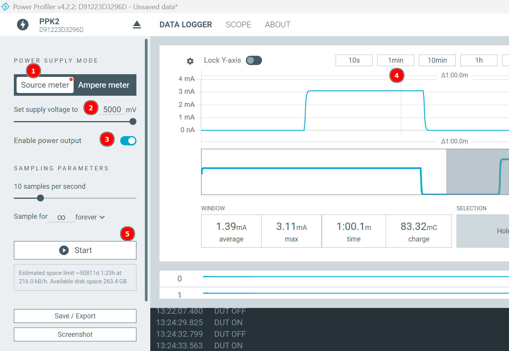
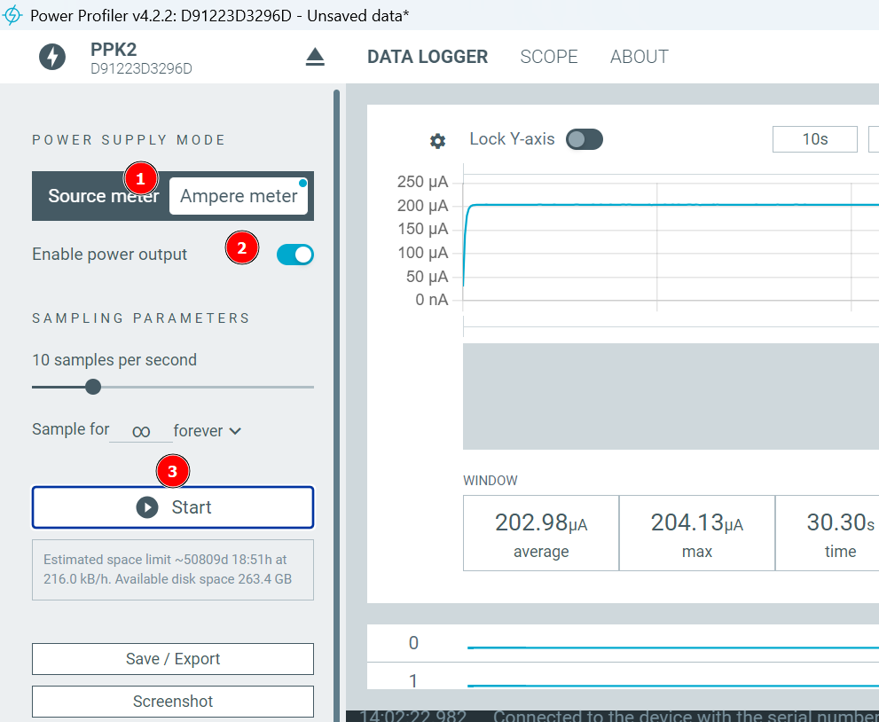

Messen von Strom und Leistung mit dem Nordic Power Profiler II
Vorbereitung
Auf dem Rechner muss die Software nrFConnect installiert sein.
Bei Start der Software muss unter Apps das Programm PowerProfiler installiert und gestartet werden.
Messen des Stromverbrauchs einer LED
Verkabelung
Der PowerProfiler wird über USBDataPower an den Rechner angeschlossen.
Die LED wird mit einem Schutzwiderstand an folgende Pole angeschlossen:
- LED + an VOUT
- LED - an Widerstand
- Widerstand an GND rechts von VOUT
Software-Einstellungen

- Source-Mode:
Der PP dient als Spannungsquelle. Über VOUT und GND können maximal 5V Spannung ausgegeben werden.
- Set Supply Voltage:
Mit dem Schieberegler kann die ausgegebene Spannung eingestellt werden.
- Enable Power Output:
Muss eingeschaltet sein, sonst gibt das System keine Spannung aus.
- Zeitskala
Um glatte Kurven zu erhalten, sollte hier 1 min eingestellt sein.
- Start
Startet die Messung.
Mit diesem Versuch kann gezeigt werden, dass verschieden farbige LEDs unterschiedlich viel Strom benötigen.
Messung des Stromverbrauchs eines Arduino Unos
Verkabelung
| PowerProfiler |
Arduino |
| VOUT |
VIN |
| GND |
GND |
Am Arduino können jetzt noch beliebige Verbraucher angeschlossen sein.
Software Einstellung
s. o.
Messung des Stromverbrauchs einer an den Arduino angeschlossenen LED
Verkabelung
- Arduino über USB an Rechner
- LED + an +5V am Arduino
- LED - an Schutzwiderstand
- Schutzwiderstand an VIN am PowerProfiler
- VOUT PowerProfiler an GND am Arduino
Software Einstellung

- Ampere-Meter
Wir messen Stromstärke.
- Enable Power Output
Auch in diesem Fall muss das System Spannung abgegeben - sonst leuchtet die LED nicht.
- Start
Die gemessene Stromstärke ist in diesem Fall deutlich geringer als beim direkten Anschluss der LED an den Powerprofiler.
Messen des Stromverbrauchs eine Mikrocontrollers an einem Akku
Verkabelun
- Akku + auf VIN am PowerProfiler
- VOUT am Powerprofiler auf VIN am Mikrocontroller
- GND am Mikrocontroller auf - am Akku
Software Einstellung
s.o.